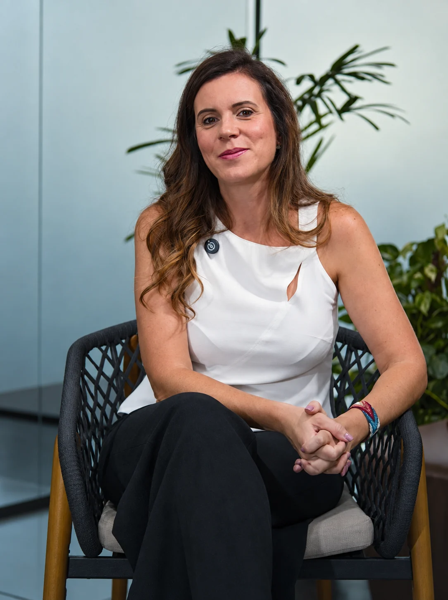

A conversa
O Encontro de Planejamento é gratuito e sem compromisso. Quero ouvir quem vai viajar, para onde vocês sonham ir, quando e quanto faz sentido investir. Você sai com clareza sobre os próximos passos
SEM CUSTO · SEM PRESSÃOVIAGENS EM FAMÍLIA, COM A TRAVEL MADE
O destino que vocês vêm sonhando, montado por quem entende de viagem em família. Eu cuido da viagem inteira, faço caber no seu orçamento e penso em cada decisão importante antes de você, pra sua família viver cada dia tranquila
Agendar meu Encontro de PlanejamentoUMA VIAGEM GRANDE MERECE UM PLANO À ALTURA
Quinze abas abertas. Um grupo de Facebook. Opinião demais pra todo lado, e cada vez menos certeza
Uma grande viagem em família envolve investimento, datas que precisam funcionar pra todo mundo e escolhas que mudam a experiência inteira. O hotel certo, o ritmo de cada dia, o que reservar com antecedência e o que realmente vale a pena para a idade das crianças
Eu penso em cada detalhe com você, para que a viagem chegue pronta e vocês possam estar juntos, vivendo cada momento
Conheça meu jeito de planejarExperiência que faz diferença em cada escolha
UM CAMINHO CLARO, DO PRIMEIRO CONTATO AO ÚLTIMO DIA
Uma parceria próxima, organizada em quatro passos para a sua família viajar com segurança
O Encontro de Planejamento é gratuito e sem compromisso. Quero ouvir quem vai viajar, para onde vocês sonham ir, quando e quanto faz sentido investir. Você sai com clareza sobre os próximos passos
SEM CUSTO · SEM PRESSÃOQuando você decide seguir, eu monto a viagem a partir da sua família: voos, hotéis, ingressos, reservas, roteiro dia a dia e a estratégia de cada destino. Nada de pacote pronto
FEITO PARA VOCÊSAntes de viajar, a gente se encontra de novo. Apresento o roteiro completo e preparo a família para cada dia, para vocês chegarem sabendo como aproveitar
CADA DETALHE NO LUGARDurante todos os dias fora, estou com você pelo WhatsApp. Voo atrasado, mudança de plano ou qualquer dúvida: me chama e resolvemos juntos
SUPORTE DO INÍCIO AO FIMComece com uma conversa tranquila
Quero começar pela conversaDESTINOS QUE EU PLANEJO PARA FAMÍLIAS
Cada lugar pede um olhar diferente. O roteiro nasce do que a sua família quer viver e do ritmo que faz sentido para vocês

Parques, estratégia para cada dia e reservas que fazem a viagem render de verdade

A magia dos parques e o charme de Paris, num ritmo que a família aproveita

Resorts e all inclusive bem escolhidos, para descansar sem dor de cabeça

De Buenos Aires à neve de Bariloche, um sonho pertinho do Brasil

Roma, Veneza e Toscana, com história, boa comida e tempo para ser criança

Um destino que impressiona adultos e crianças, planejado para viver juntos
Esses são alguns exemplos de destinos. Na conversa, a gente descobre qual grande viagem combina com a sua família

QUEM VAI CUIDAR DA SUA VIAGEM
São mais de 15 anos no turismo, 27 países visitados e seis anos à frente da Travel Made, uma agência digital que planeja viagens de família para o Brasil inteiro
A minha segurança vem do estudo constante. Acompanho cada temporada, comparo hotéis e resorts, faço treinamentos das operadoras e sigo tudo que muda em cada destino. É assim que descubro onde cada escolha faz diferença e monto a combinação certa de custo, conforto e experiência para vocês
CADA FAMÍLIA, UMA HISTÓRIA
Este espaço está reservado para histórias reais de famílias que viajaram com a Denise
DEPOIMENTOS EM BREVECUIDADO EM CADA ETAPA
Tudo o que a sua família precisa para viajar com a tranquilidade de saber que cada escolha foi pensada
Montar a viagem da minha famíliaRoteiro dia a dia no ritmo da sua família
↗Voos, hotéis e ingressos escolhidos por preço, localização e experiência
↗Estratégia de cada destino e reservas feitas no momento certo
↗Encontro de entrega, com roteiro pronto e família preparada
↗Meu suporte no WhatsApp durante todos os dias da viagem
↗PERGUNTAS QUE TODA FAMÍLIA FAZ
Uma boa viagem começa com confiança. Aqui estão algumas respostas para você dar o primeiro passo com tranquilidade
É, sim. É nossa primeira conversa, sem custo e sem compromisso. Eu entendo a sua família e a viagem que vocês querem, e você sente se faz sentido seguir comigo. O roteiro detalhado vem no passo seguinte, quando você decide fechar
Para grandes viagens em família, dentro e fora do Brasil. Orlando é o destino que mais planejo, e também monto viagens pela Europa, Caribe, América do Sul e outros lugares. O cuidado com cada escolha é o mesmo
Depende da viagem que faz sentido para a sua família. Por isso começamos pela conversa gratuita: entendo o que vocês querem e quanto faz sentido investir, e planejo a viagem dentro desse orçamento
Você conversa comigo antes de fechar qualquer coisa. Já na primeira conversa dá para perceber se eu conheço o destino e entendi o que sua família precisa
Eu fico com você no WhatsApp do primeiro ao último dia. Voo atrasou, o plano mudou ou bateu uma dúvida? Você me chama e a gente resolve
O PRIMEIRO PASSO É LEVE
Me chama no WhatsApp. Eu te ouço com calma e mostro como planejar essa viagem do jeito certo, do primeiro ao último dia
Falar com a Denise no WhatsApp